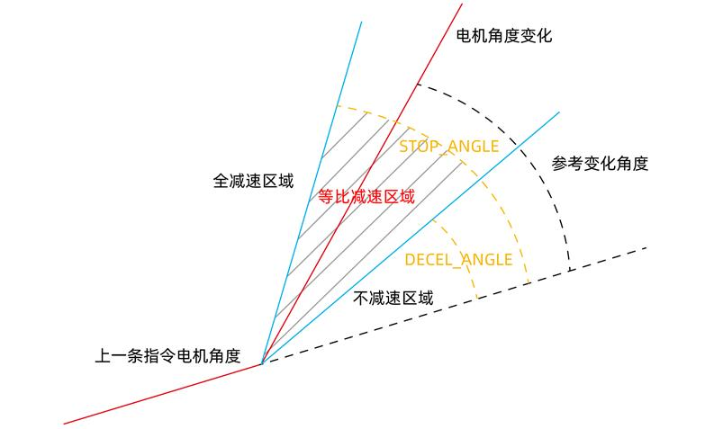

|
类型 |
轴参数 |
|
描述 |
停止减速到的角度，单位是弧度。 减速拐角参考速度以FORCE_SPEED速度为参考，一定要设置合理的FORCE_SPEED。 角度转换弧度公式：角度值*(PI/180) 减速角度是指电机的参考角度相对上一条运动的变化值。如下图。 此角度值不是实际轨迹的角度，是换算到电机变换的角度，此角度值仅为参考。  下一插补运动轨迹处于下方时取绝对值。 直线与圆弧相连时按照圆弧的切线方向计算角度。 与DECEL_ANGLE一起使用，当实际运动的角度处于DECEL_ANGLE（上限）与STOP_ANGLE（下限）时才会减速。 |
|
语法 |
VAR1 = STOP_ANGLE，STOP_ANGLE= expression |
|
适用控制器 |
通用 |
|
例子 |
参考 CORNER_MODE 例程一 CORNER_MODE=2 DECEL_ANGLE = 25 * (PI/180) STOP_ANGLE = 90 * (PI/180) FORCE_SPEED=SPEED '一定要设置FORCE_SPEED |
|
相关指令 |